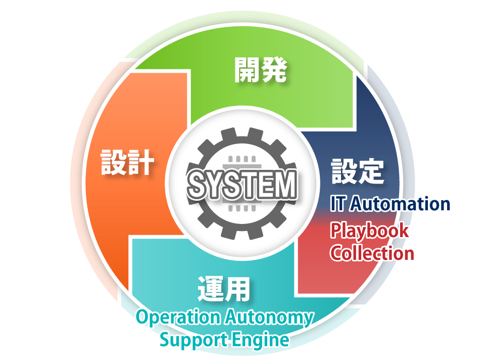

Automated tasks simplify operation.
Exastro とは何ですか？

Exastroはシステムライフサイクル
(設計・開発・設定・運用)を
デジタル化・自動化・省力化することを目的とした
オープンソースのソフトウェアスイートです。
Exastro Suite
-
- Exastro IT Automation

- Exastro IT Automationはシステムライフサイクルにおける以下の問題に対する解決策を提供します。
・データ多重管理による設計ミス
・複雑な人手作業によるオペレーションミス
・作業記録不足による障害対応遅延 - 詳細はこちら
-
- Exastro Playbook Collection

- Exastro Playbook Collectionはシステム構築で利用されるOSやMiddleware用のPlaybook集です。
実機からパラメータを収集するPlaybookが含まれており、構築後の設定確認時などに活用できます。 - 詳細はこちら
-
- Exastro Operation Autonomy Support Engine

- Exastro Operation Autonomy Support Engineは、システム運用業務の自動化・効率化・省力化を実現するためのソフトウェアです。
システム運用におけるノウハウやドキュメントをルールとして一元管理し、運用情報から対処方法を自動で判断します。
さらにExastro IT Automation等の自動化ソフトウェアをコントロールできるため、対処を自動で実行することも可能です。 - 準備中
-
- and more
- Exastroはさらなる可能性を準備しています...